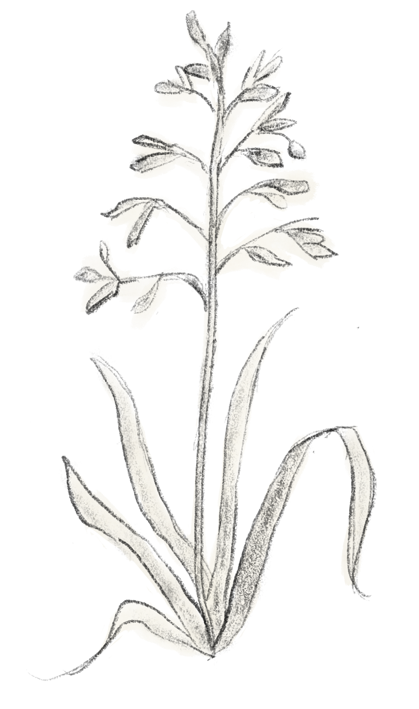

Dandelion (Taraxacum officinale)
A flowering perennial plant with a distinctive yellow flower head. It is extremely tolerant and propagates easily. As such, it can be found all over the world.
Connections
The relationship between dandelions and horses is an example of mutualism. Horses can consume dandelions as a source of nutrients, and in doing so can aid in seed dispersal through fecal matter. As a plant known for its resilience and effectiveness at absorbing nutrients, dandelions can compete with other plants like bluegrass  for resources in areas where they coexist.